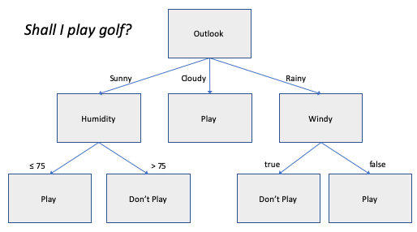

This work is supported by the European Union's Horizon 2020 research and innovation programme under grant agreement No 780732, project Boost 4.0
This work is supported by the European Union's Horizon 2020 research and innovation programme under grant agreement No 780732, project Boost 4.0

This is a demo of decision trees implemented as chunk rules, and inspired by a tutorial for ID3. The aim is to decide whether to play a round of golf based upon today's weather. A future demo will show how such decision trees can be induced from examples that potentially include some errors. A separate rule is needed for each arrow shown in the decision tree diagram. See more information on chunks and rules.
The demo starts by setting a goal chunk describing the weather. This is randomly initialised to make it a little more interesting. The rule for the initial goal considers the weather outlook. If it is sunny, rules are used to consider the humidity. If it is rainy, other rules consider whether it is too windy for play to be enjoyable. The decision is written to the output module. Note that this demo doesn't use the facts module.
Press Start to initiate/restart the demo, and then Next to execute a single step.
Console:
Execute rules, one at a time:
Rules graph:
Dave Raggett <dsr@w3.org>
This work is supported by the European Union's Horizon 2020 research and innovation programme under grant agreement No 780732, project Boost 4.0